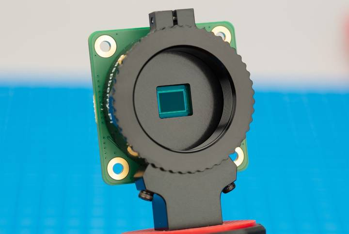
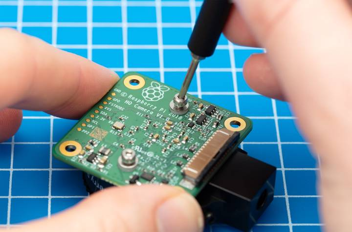
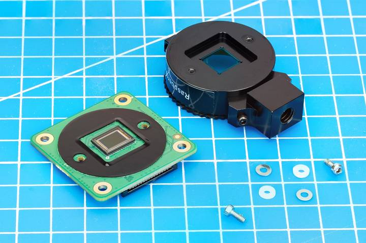
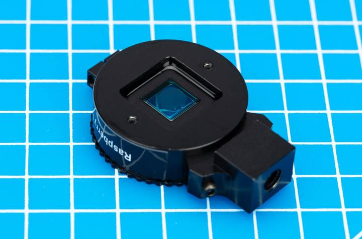
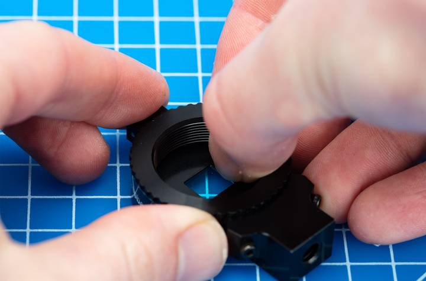
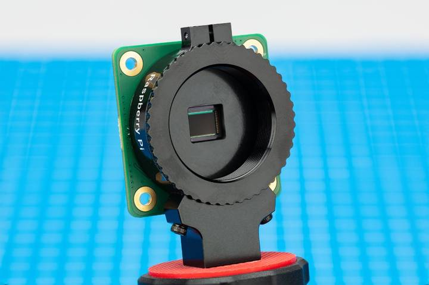

This procedure cannot be reversed: the adhesive that attaches the filter will not survive being lifted and replaced, and while the IR filter is about 1.1 mm thick, it might crack when it is removed. Removing it will void the warranty on the product.
You can remove the filter from both the HQ and GS cameras. The HQ camera is shown in the demonstration below.

To protect the sensor when exposed to the air, ensure that you're working in a clean and dust-free environment.
Unscrew the two 1.5 mm hex lock keys on the underside of the main circuit board. Be careful not to let the washers roll away.

When the adhesive is loose, lift up the board and place it down on a very clean surface. Make sure the sensor doesn't touch the surface.

Face the lens upwards and place the mount on a flat surface.

To minimise the risk of breaking the filter, use a pen top or similar soft plastic item to push down on the filter only at the very edges where the glass attaches to the aluminium. The glue will break and the filter will detach from the lens mount.

Next, fit the steel washer, which prevents damage to the nylon washer. Screw down the two hex lock keys. As long as the washers have been fitted in the correct order, they do not need to be screwed very tightly. Replacement screws are free of charge.

It is likely to be difficult or impossible to glue the filter back in place and return the device to functioning as a normal optical camera.